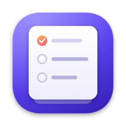

TaskDock
A fast, native macOS app for your Google Tasks, with a menu bar companion.
What it does
- Shows all your Google Tasks lists in a compact Mac window
- Add, edit, complete, reorder, and delete tasks and subtasks
- Today and Upcoming views based on due dates
- A menu bar icon for checking and editing tasks without opening the app
- Undo, natural-language due dates, and a choice of accent color
How your data is handled
TaskDock runs entirely on your Mac and talks directly to Google's Tasks API. There is no TaskDock server, and your tasks are never sent anywhere else. Read the full privacy policy.